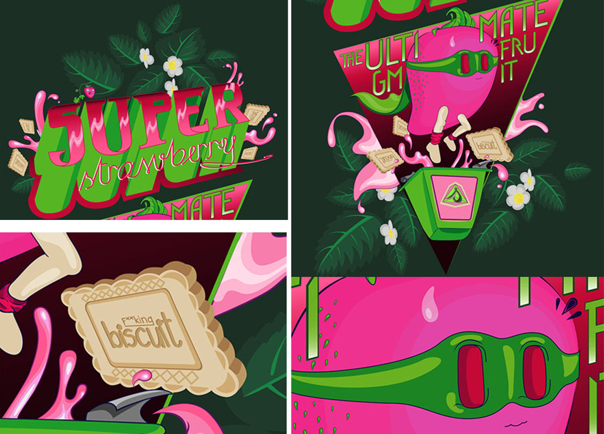

GM Super Hero
Lately I have come across the subject of genetically modified foods. It has given me a couple of days to rethink. I don`t want to bore you stiff by sharing my exuberant philosophical ideas about this topic, but I definitely want to share my illustration.
The result is the ultimate super hero, Straw B.

